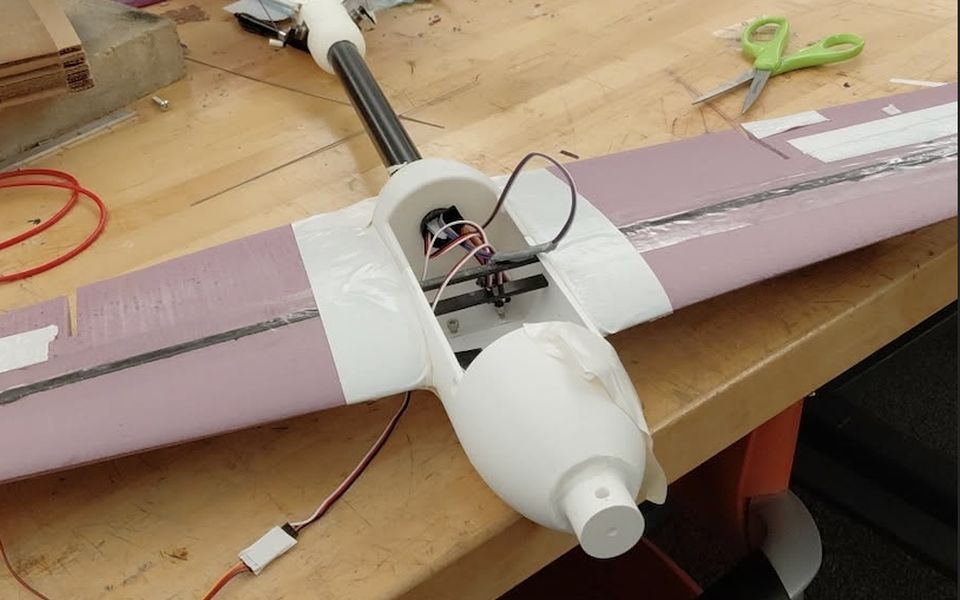

Requiem: 110 mph Competition Aircraft
Led design and manufacturing through a full redesign and repeated iterations: from an unflyable foam prototype to Requiem, a V-tail aircraft with a 3D-printed fuselage that hit 110 mph. I ran all the XFLR5 stability simulations.